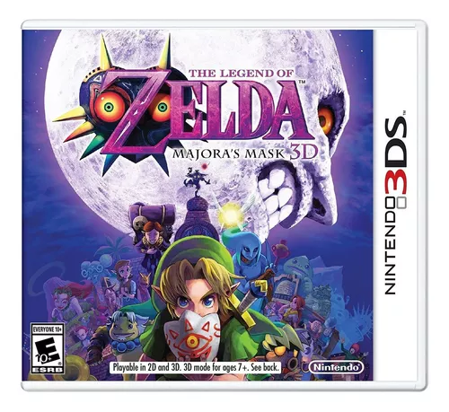
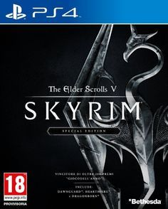
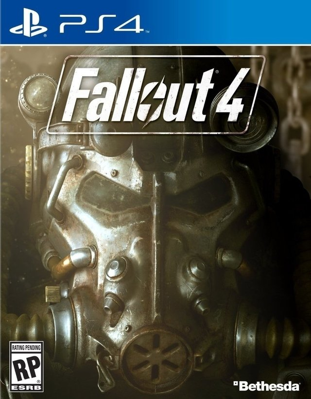
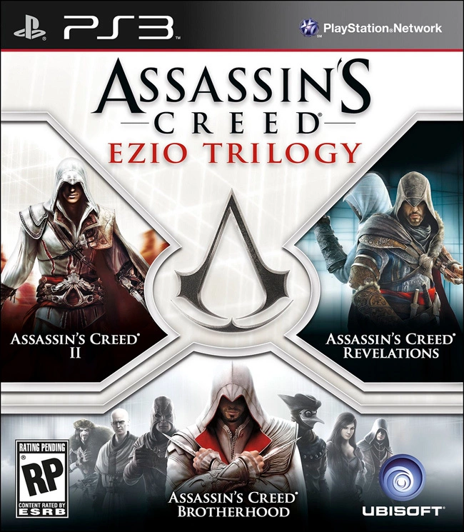
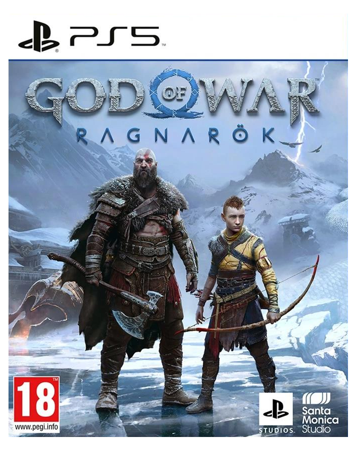
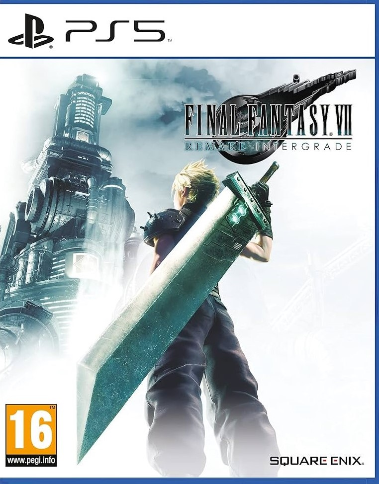

| VideoJuego |
Trama |
Caracteristicas |
Año de lanzamiento
| Desarrolladora
| Clasificacion Edad |
Genero |
Plataforma |
|  |
Link debe salvar la tierra de Termina en un ciclo de tres días antes de que la luna se estrelle contra ella. |
- Utilización de máscaras para obtener diferentes habilidades, gestión del tiempo y resolución de acertijos.
- Amplia aclamación crítica por su atmósfera oscura y complejidad.
- Un jugador.
- Gráficos en 3D avanzados para su época, utilizando la expansión de memoria del Nintendo 64.
- Banda sonora compuesta por Koji Kondo, destacada por su atmósfera y temas memorables.
|
2000 |
Nintendo |
Everyone (E) |
Acción-aventura
|
3DS
|
|  |
El jugador es el Dragonborn, destinado a salvar el mundo de Alduin, un dragón que se profetiza destruirá el mundo. |
- Exploración en mundo abierto, combate en primera y tercera persona, desarrollo de habilidades y misiones.
- Críticas aclamadas por su vasto mundo y libertad de elección del jugador.
- Un jugador.
- Gráficos detallados con un amplio y diverso paisaje.
- Banda sonora épica y efectos de sonido ambientales envolventes.
|
2011 |
Bethesda Game Studios |
Mature (M). |
RPG de acción
|
PlayStation 4
|
|  |
El jugador explora un mundo postapocalíptico en busca de su hijo secuestrado. |
- Exploración en mundo abierto, combate en primera y tercera persona, construcción de asentamientos.
- Reseñas generalmente favorables, elogios por su profundidad y contenido.
- Un jugador.
- Gráficos avanzados con detallado mundo abierto.
- Banda sonora inmersiva y efectos de sonido ambientales.
|
2015 |
Bethesda Game Studios |
Mature (M). |
RPG de acción
|
PlayStation 4
|
 |
Tres criminales planean robos para enriquecerse mientras son perseguidos por una agencia gubernamental. |
- Exploración de mundo abierto, misiones principales y secundarias, múltiples protagonistas.
- Críticas aclamadas por su narrativa, diseño de mundo y jugabilidad.
- Un jugador, Multijugador en línea.
- Gráficos detallados y realistas con un mundo vibrante.
- Banda sonora licenciada, efectos de sonido realistas y diálogos de alta calidad.
|
2013 |
Rockstar North |
Mature (M)
|
Acción-aventura
|
PlayStation 5
|
 |
Arthur Morgan, miembro de la banda de Van der Linde, lucha por sobrevivir en el crepúsculo del Viejo Oeste. |
- Exploración en mundo abierto, combate, interacción con NPCs y gestión de recursos.
- Críticas aclamadas por su historia, personajes y mundo detallado.
- Un jugador, Multijugador en línea.
- Gráficos realistas y detallados con un mundo vasto y vivo.
- Banda sonora atmosférica y efectos de sonido detallados.
|
2018 |
Rockstar Games |
Mature (M)
|
Acción-aventura
|
PlayStation 4
|
|  |
Revive la vida de Ezio Auditore da Firenze en su lucha contra los Templarios en Italia. |
- Exploración, combate, sigilo y parkour en mundo abierto.
- Reseñas positivas por la remasterización y la oportunidad de revivir clásicos de la saga.
- Un jugador.
- Mejoras gráficas y visuales en comparación con los lanzamientos originales.
- Banda sonora épica y diálogos remasterizados.
|
2016 |
Ubisoft |
Mature (M)
|
Acción-aventura
|
PlayStation 3
|
|  |
Kratos y su hijo Atreus enfrentan los eventos del Ragnarök en la mitología nórdica. |
- Combate cuerpo a cuerpo, exploración y resolución de acertijos.
- Críticas muy positivas por su narrativa, gráficos y jugabilidad.
- Un jugador.
- Gráficos impresionantes con detalles realistas.
- Banda sonora épica y efectos de sonido inmersivos.
|
2022 |
Santa Monica Studio |
Mature (M)
|
Acción-aventura
|
PlayStation 5
|
 |
Sora, Donald y Goofy viajan por diferentes mundos de Disney para detener a las fuerzas de la oscuridad. |
- Combate en tiempo real, exploración de mundos temáticos de Disney y desarrollo de personajes.
- Críticas positivas por la recopilación de juegos y el valor nostálgico.
- Un jugador.
- Gráficos variados que capturan el estilo de diferentes mundos de Disney.
- Banda sonora mágica y efectos de sonido envolventes.
|
2020 |
Square Enix |
Teen (T)
|
RPG de acción
|
PlayStation 4
|
 |
Geralt de Rivia busca a su hija adoptiva, Ciri, mientras es perseguido por la Cacería Salvaje. |
- Exploración en mundo abierto, combate, desarrollo de personajes y decisiones narrativas.
- Críticas aclamadas por su historia, mundo y jugabilidad. La actualización de PS5 mejoró gráficos y rendimiento.
- Un jugador.
- Gráficos mejorados en PS5 con mayor detalle y fluidez.
- Banda sonora atmosférica y efectos de sonido de alta calidad.
|
2015, actualización de 2022 para PS5 |
CD Projekt Red |
Mature (M)
|
RPG de acción
|
PlayStation 5
|
|  |
Cloud Strife y sus aliados luchan contra la corporación Shinra y el enigmático Sephiroth. |
- Combate en tiempo real con elementos estratégicos, exploración y desarrollo de personajes.
- Reseñas positivas por su narrativa, gráficos y combate. La versión de PS5 añadió mejoras visuales y de rendimiento.
- Un jugador.
- Gráficos avanzados con mejoras en PS5.
- Banda sonora épica y efectos de sonido detallados.
|
2020, versión mejorada de 2021 para PS5 |
Square Enix |
Teen (T)
|
RPG
|
PlayStation 5
|